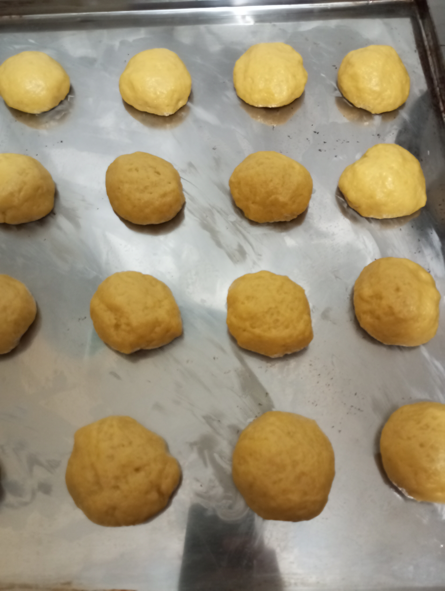
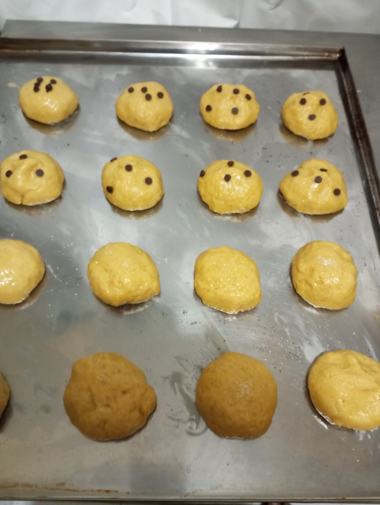

1.Preparar los ingredientes
2.Cremar la margarina con el qzucar hasta que se haya disuelto el qzucar y cambie a un color claro

3.Agregar un huevo luego mezclar los ingredientes hasta que este integrado
4.Agregar otro huevo a la mezcla e integrarlo
5.Agregar un poco de esencia de vainilla aunque esto puede ser opcional
6.Aparte disolver la levadura en la leche
7.Añadir gotas de colorante amarillo y mezclar de nuevo para esparcir el color
8.Integrar la leche mezclada con levadura en la mezcla con el azucar y margarina
9.Agregar la harina que contiene la sal y mezclar

10.Pesar masas entre 50 y 60 gramos y llevarlo a una lata engrasada
11.Pintar con huevo en la parte superior de la masa
12.Decorar encima de la pintura con chispas de chocolate o de azucar o frutas confitadas
13.Llevar a un horno precalentado por 180 grados por 40 minutos y haya cambiado de color y haya crecido